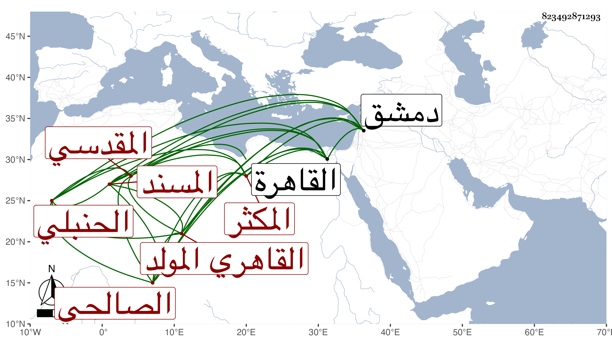

0902Sakhawi.DawLamic.ITO20230111-ara1.EIS1600.823492871293
Biography ID: 823492871293
إبراهيم بن صدقة بن إبراهيم بن اسماعيل المسند المكثر برهان الدين أبو إسحاق بن فتح الدين المقدسي الأصل الصالحي نسبة لصالحية دمشق القاهري المولد والمنشأ الحنبلي ويعرف أبوه بالصائغ بمهملة وآخره معجمة وبالبزار بمعجمتين وهو بالصالحي . ولد في سنة اثنتين وسبعين وسبعمائة بالقاهرة وأمه خديجة ابنة محمد بن أحمد المقدسي خالة جده القاضي عز الدين أحمد بن إبراهيم الكناني الآتي لأمه نشأ فحفظ القرآن والعمدة في الحديث ومختصر الخرقي في فروعهم وعرض على ابن الملقن والابناسي وابن حاتم والعراقي وأجازوا له بل سمع على من عدا لاول وكذا سمع على أمه والجمال الباجي والنجم ابن رزين والصدر أبي حفص بن رزين والعزأبي اليمن بن الكويك وولده الشرف أبي الطاهر والقراء الثلاثة الشمس العسقلاني وأبي البقاء بن القاصح والزين أبي الفرج عبد الرحمن السلماسي الحنفي وكذا الزين بن الشيخة والصلاحين البلبيسي ومحمد بن محمد بن حسن الشاذلي والشهب الأربعة ابن المقري وابن بنين والسويداوي والجوهري والشموس الأربعة الرفاء وابن أبي زبا وابن ياسين الجزولي والتقى الدجوي والفخر القاياتي وآخرين وأجاز له خلق ممن لم أقف له على سماع عليهم فمنهم من المغاربة أبو عبد الله السلاوي ومن غيرهم من علماء مذهبه القاضي ناصر الدين بن عرفة وأبو القاسم البرزلي والقاضي ابن خلدون والفخر أبو عمر عثمان بن أحمد القيرواني وأبو عبد الله السلاوي ومن غيرهم من علماء مذهبه القاضي ناصر الدين نصر الله بن أحمد الكناني والجلال نصر الله بن أحمد البغدادي ومن سائر الناس السراج الكومي والتنوخي والعز بن المليجي وابن أبي المجد وابن الفصيح والتاج الصردي والشمس الفرسيسي والصدر بن الابشيطي والمناوي وناصر الدين بن الميلق وعبدالكريم بن محمد ابن القطب الحلبي والشمس الحريري والعلاء بن السبع . واشتغل بالفقه وغيره وأذن له الشرف عبدالمنعم البغدادي في التدريس وأثنى عليه وتنزل في الجهات كالشيخونية وتكسب بالشهادة وقتا ومهر فيها ثم عجز وأقعد بمنزله وقصده الطلبة للاسماع وأخذ عنه الفضلاء الكثير وكنت ممن حمل عنه أشياء كثيرة أوردتها في ترجمته من معجمي وكان خيرا ثقة صبورا على التحدث لايمل ولا يضجر محبا في الحديث وأهله قليل المثل في ذلك مع سكون ووقار وربما أورد الحكاية والنادرة وقد وصفه قريبه العز الكناني بمزيد الانحراف وشدة الانجماع وسوء الظن وعدم المداراة فالله أعلم . وبالجملة فهو من محاسن المسندين . مات في يوم الأحد سادس عشري جمادى الثانية سنة اثنتين وخمسين بعد أن تغير قليلا فيما قيل وما ثبت ذلك عندي وصلى عليه من الغد بجامع الأزهر رحمه الله وإيانا . وقول البقاعي انه اختلط من أول سنة اثنتين وأربعين من فالج أبطل أحد شقيه حتى مات مجازفة صريحة .
